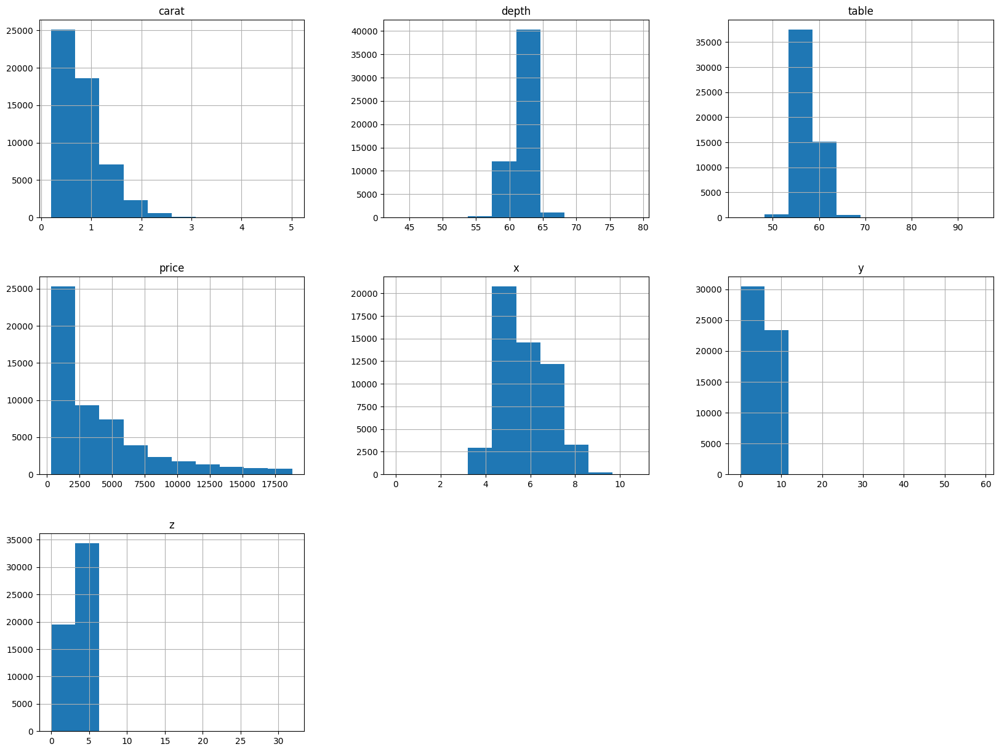

import pandas as pd
import numpy as npTable of contents
- Packages
- Import datasets from Kaggle
- Data Exploration
- Print first few rows, shape, and data types
- Use describe() to get summary statistics
- Data Preparation
- Manipulate categorical variables
- Eliminate disturbing values
- Eliminate values that > 99% of the rest
- Data for Training and Testing
- Modeling
- Linear Regression Model
- Training
Packages
Import datasets from Kaggle
This dataset is available on Kaggle at Diamond Price Prediction.
diamond_df = pd.read_csv('data/diamonds.csv')diamond_df.head(), diamond_df.shape( Unnamed: 0 carat cut color clarity depth table price x y \
0 1 0.23 Ideal E SI2 61.5 55.0 326 3.95 3.98
1 2 0.21 Premium E SI1 59.8 61.0 326 3.89 3.84
2 3 0.23 Good E VS1 56.9 65.0 327 4.05 4.07
3 4 0.29 Premium I VS2 62.4 58.0 334 4.20 4.23
4 5 0.31 Good J SI2 63.3 58.0 335 4.34 4.35
z
0 2.43
1 2.31
2 2.31
3 2.63
4 2.75 ,
(53940, 11))Eliminate the leftmost column, which is just an index.
diamond_df = diamond_df.drop(['Unnamed: 0'], axis=1)Data Exploration
Print first few rows, shape, and data types
diamond_df.head(), diamond_df.shape, diamond_df.dtypes( carat cut color clarity depth table price x y z
0 0.23 Ideal E SI2 61.5 55.0 326 3.95 3.98 2.43
1 0.21 Premium E SI1 59.8 61.0 326 3.89 3.84 2.31
2 0.23 Good E VS1 56.9 65.0 327 4.05 4.07 2.31
3 0.29 Premium I VS2 62.4 58.0 334 4.20 4.23 2.63
4 0.31 Good J SI2 63.3 58.0 335 4.34 4.35 2.75,
(53940, 10),
carat float64
cut object
color object
clarity object
depth float64
table float64
price int64
x float64
y float64
z float64
dtype: object)Use describe() to get summary statistics
diamond_df.describe()| carat | depth | table | price | x | y | z | |
|---|---|---|---|---|---|---|---|
| count | 53940.000000 | 53940.000000 | 53940.000000 | 53940.000000 | 53940.000000 | 53940.000000 | 53940.000000 |
| mean | 0.797940 | 61.749405 | 57.457184 | 3932.799722 | 5.731157 | 5.734526 | 3.538734 |
| std | 0.474011 | 1.432621 | 2.234491 | 3989.439738 | 1.121761 | 1.142135 | 0.705699 |
| min | 0.200000 | 43.000000 | 43.000000 | 326.000000 | 0.000000 | 0.000000 | 0.000000 |
| 25% | 0.400000 | 61.000000 | 56.000000 | 950.000000 | 4.710000 | 4.720000 | 2.910000 |
| 50% | 0.700000 | 61.800000 | 57.000000 | 2401.000000 | 5.700000 | 5.710000 | 3.530000 |
| 75% | 1.040000 | 62.500000 | 59.000000 | 5324.250000 | 6.540000 | 6.540000 | 4.040000 |
| max | 5.010000 | 79.000000 | 95.000000 | 18823.000000 | 10.740000 | 58.900000 | 31.800000 |
import matplotlib.pyplot as plt
%matplotlib inline
# Print 7 histograms, with each title describe shortly the distribution style of the data (e.g. right-skewed, clustered,...)
diamond_df.hist(figsize=(20, 15));
# The scatter matrix is a great way to visualize the relationships between multiple variables in a dataset.
from pandas.plotting import scatter_matrix
scatter_matrix(diamond_df, figsize=(20, 15), diagonal='kde');
Data Preparation
Manipulate categorical variables
diamond_df['cut'].unique(), diamond_df['color'].unique(), diamond_df['clarity'].unique()(array(['Ideal', 'Premium', 'Good', 'Very Good', 'Fair'], dtype=object),
array(['E', 'I', 'J', 'H', 'F', 'G', 'D'], dtype=object),
array(['SI2', 'SI1', 'VS1', 'VS2', 'VVS2', 'VVS1', 'I1', 'IF'],
dtype=object))color_mapping = {'J': 0, 'I': 1, 'H': 2, 'G': 3, 'F': 4, 'E': 5, 'D': 6}
diamond_df.color = diamond_df.color.map(color_mapping)clarity_mapping = {'I1': 0, 'SI2': 1, 'SI1': 2, 'VS2': 3, 'VS1': 4, 'VVS2': 5, 'VVS1': 6, 'IF': 7}
diamond_df.clarity = diamond_df.clarity.map(clarity_mapping)cut_mapping = {'Fair': 0, 'Good': 1, 'Very Good': 2, 'Premium': 3, 'Ideal': 4}
diamond_df.cut = diamond_df.cut.map(cut_mapping)diamond_df.describe()| carat | cut | color | clarity | depth | table | price | x | y | z | |
|---|---|---|---|---|---|---|---|---|---|---|
| count | 53940.000000 | 53940.000000 | 53940.000000 | 53940.000000 | 53940.000000 | 53940.000000 | 53940.000000 | 53940.000000 | 53940.000000 | 53940.000000 |
| mean | 0.797940 | 2.904097 | 3.405803 | 3.051020 | 61.749405 | 57.457184 | 3932.799722 | 5.731157 | 5.734526 | 3.538734 |
| std | 0.474011 | 1.116600 | 1.701105 | 1.647136 | 1.432621 | 2.234491 | 3989.439738 | 1.121761 | 1.142135 | 0.705699 |
| min | 0.200000 | 0.000000 | 0.000000 | 0.000000 | 43.000000 | 43.000000 | 326.000000 | 0.000000 | 0.000000 | 0.000000 |
| 25% | 0.400000 | 2.000000 | 2.000000 | 2.000000 | 61.000000 | 56.000000 | 950.000000 | 4.710000 | 4.720000 | 2.910000 |
| 50% | 0.700000 | 3.000000 | 3.000000 | 3.000000 | 61.800000 | 57.000000 | 2401.000000 | 5.700000 | 5.710000 | 3.530000 |
| 75% | 1.040000 | 4.000000 | 5.000000 | 4.000000 | 62.500000 | 59.000000 | 5324.250000 | 6.540000 | 6.540000 | 4.040000 |
| max | 5.010000 | 4.000000 | 6.000000 | 7.000000 | 79.000000 | 95.000000 | 18823.000000 | 10.740000 | 58.900000 | 31.800000 |
Eliminate disturbing values
diamond_df = diamond_df.drop(diamond_df[diamond_df["x"]==0].index)
diamond_df = diamond_df.drop(diamond_df[diamond_df["y"]==0].index)
diamond_df = diamond_df.drop(diamond_df[diamond_df["z"]==0].index)Eliminate values that > 99% of the rest
diamond_df = diamond_df[diamond_df['depth'] < diamond_df['depth'].quantile(0.99)]
diamond_df = diamond_df[diamond_df['table'] < diamond_df['table'].quantile(0.99)]
diamond_df = diamond_df[diamond_df['x'] < diamond_df['x'].quantile(0.99)]
diamond_df = diamond_df[diamond_df['y'] < diamond_df['y'].quantile(0.99)]
diamond_df = diamond_df[diamond_df['z'] < diamond_df['z'].quantile(0.99)]diamond_df.head(10)| carat | cut | color | clarity | depth | table | price | x | y | z | |
|---|---|---|---|---|---|---|---|---|---|---|
| 0 | 0.23 | 4 | 5 | 1 | 61.5 | 55.0 | 326 | 3.95 | 3.98 | 2.43 |
| 1 | 0.21 | 3 | 5 | 2 | 59.8 | 61.0 | 326 | 3.89 | 3.84 | 2.31 |
| 3 | 0.29 | 3 | 1 | 3 | 62.4 | 58.0 | 334 | 4.20 | 4.23 | 2.63 |
| 4 | 0.31 | 1 | 0 | 1 | 63.3 | 58.0 | 335 | 4.34 | 4.35 | 2.75 |
| 5 | 0.24 | 2 | 0 | 5 | 62.8 | 57.0 | 336 | 3.94 | 3.96 | 2.48 |
| 6 | 0.24 | 2 | 1 | 6 | 62.3 | 57.0 | 336 | 3.95 | 3.98 | 2.47 |
| 7 | 0.26 | 2 | 2 | 2 | 61.9 | 55.0 | 337 | 4.07 | 4.11 | 2.53 |
| 8 | 0.22 | 0 | 5 | 3 | 65.1 | 61.0 | 337 | 3.87 | 3.78 | 2.49 |
| 9 | 0.23 | 2 | 2 | 4 | 59.4 | 61.0 | 338 | 4.00 | 4.05 | 2.39 |
| 10 | 0.30 | 1 | 0 | 2 | 64.0 | 55.0 | 339 | 4.25 | 4.28 | 2.73 |
diamond_df.describe()| carat | cut | color | clarity | depth | table | price | x | y | z | |
|---|---|---|---|---|---|---|---|---|---|---|
| count | 51130.000000 | 51130.000000 | 51130.000000 | 51130.000000 | 51130.000000 | 51130.000000 | 51130.000000 | 51130.000000 | 51130.000000 | 51130.000000 |
| mean | 0.748505 | 2.965500 | 3.463974 | 3.117426 | 61.717375 | 57.349591 | 3561.244631 | 5.637999 | 5.641865 | 3.480219 |
| std | 0.406608 | 1.060319 | 1.679777 | 1.640241 | 1.285391 | 2.074312 | 3475.346374 | 1.035121 | 1.028587 | 0.637887 |
| min | 0.200000 | 0.000000 | 0.000000 | 0.000000 | 43.000000 | 43.000000 | 326.000000 | 3.730000 | 3.680000 | 1.070000 |
| 25% | 0.390000 | 2.000000 | 2.000000 | 2.000000 | 61.100000 | 56.000000 | 921.000000 | 4.680000 | 4.690000 | 2.890000 |
| 50% | 0.700000 | 3.000000 | 3.000000 | 3.000000 | 61.800000 | 57.000000 | 2273.000000 | 5.640000 | 5.650000 | 3.480000 |
| 75% | 1.020000 | 4.000000 | 5.000000 | 4.000000 | 62.500000 | 59.000000 | 4997.000000 | 6.480000 | 6.480000 | 4.010000 |
| max | 2.070000 | 4.000000 | 6.000000 | 7.000000 | 65.500000 | 63.500000 | 18806.000000 | 8.300000 | 8.150000 | 5.000000 |
X = diamond_df.drop(['price'], axis=1)
y = diamond_df['price']X = X.to_numpy()
y = y.to_numpy()X.shape, y.shape((51130, 9), (51130,))Data for Training and Testing
Split dataset into 80% training and 20% testing.
X_train = X[:int(X.shape[0]*0.8)]
y_train = y[:int(X.shape[0]*0.8)]
X_test = X[int(X.shape[0]*0.8):]
y_test = y[int(X.shape[0]*0.8):]Normailize the data by subtracting the mean and dividing by the standard deviation.
xmean = np.mean(X_train, axis=0)
xstd = np.std(X_train, axis=0)
X_train = (X_train - xmean) / xstd
X_test = (X_test - xmean) / xstdX_train.shape, X_test.shape, y_train.shape, y_test.shape((40904, 9), (10226, 9), (40904,), (10226,))Tranpose the data so that each row is a feature and each column is an example.
X_train = np.hstack([np.ones((X_train.shape[0], 1)), X_train])
X_test = np.hstack([np.ones((X_test.shape[0], 1)), X_test])X_train.shape, X_test.shape, y_train.shape, y_test.shape((40904, 10), (10226, 10), (40904,), (10226,))Modeling
Linear Regression Model
N = X_train.shape[0]
n_epochs = 1000
m = 1000
learning_rate = 0.001
# No explicit bias term; the first column of X_* is ones to learn the intercept via W
theta = np.random.randn(10, 1)
losses = []Training
for epoch in range(n_epochs):
for i in range(0, N, m):
# Take a batch of data
X_batch = X_train[i:i+m, :]
y_batch = y_train[i:i+m].reshape(-1, 1)
# Predict y_hat
y_hat = X_batch @ theta
# Compute loss
loss = np.mean((y_hat - y_batch) ** 2)
losses.append(loss)
# Compute gradient
gradient = 2 * X_batch.T @ (y_hat - y_batch)
# Update weights
theta -= learning_rate * (gradient / m)
if (epoch + 1) % 50 == 0:
print(f"Epoch {epoch + 1}/{n_epochs} - Loss: {losses[-1]}")Epoch 50/1000 - Loss: 854708.0516617359
Epoch 100/1000 - Loss: 930914.8572299478
Epoch 150/1000 - Loss: 898110.7162777601
Epoch 200/1000 - Loss: 865845.7363739273
Epoch 250/1000 - Loss: 837663.5253486462
Epoch 300/1000 - Loss: 813167.4802514835
Epoch 350/1000 - Loss: 791865.9880215391
Epoch 400/1000 - Loss: 773328.4771558258
Epoch 450/1000 - Loss: 757183.2714683163
Epoch 500/1000 - Loss: 743109.6553640236
Epoch 550/1000 - Loss: 730830.8144026892
Epoch 600/1000 - Loss: 720107.7571102347
Epoch 650/1000 - Loss: 710734.0840505699
Epoch 700/1000 - Loss: 702531.4850563508
Epoch 750/1000 - Loss: 695345.8628449123
Epoch 800/1000 - Loss: 689043.9955747422
Epoch 850/1000 - Loss: 683510.6631254262
Epoch 900/1000 - Loss: 678646.17239842
Epoch 950/1000 - Loss: 674364.2259820343
Epoch 1000/1000 - Loss: 670590.0863051731# Validate the model, compute MSE on the test set
y_hat_test = X_test @ theta
test_loss_mse = np.mean((y_test - y_hat_test) ** 2)
print(f"Test MSE: {test_loss_mse}")Test MSE: 1537603.700873669# MAE
test_loss_mae = np.mean(np.abs(y_test - y_hat_test))
print(f"Test MAE: {test_loss_mae}")Test MAE: 955.1539844066257# Save the model parameters
np.savez(
'weight.npz',
x_mean=xmean,
x_std=xstd,
theta=theta
)# Save the training and testing data
np.savez('data.npz', X_train=X_train, y_train=y_train, X_test=X_test, y_test=y_test)